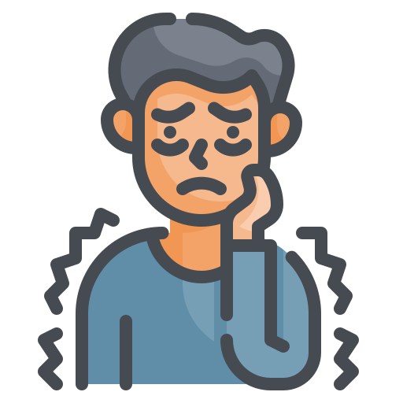
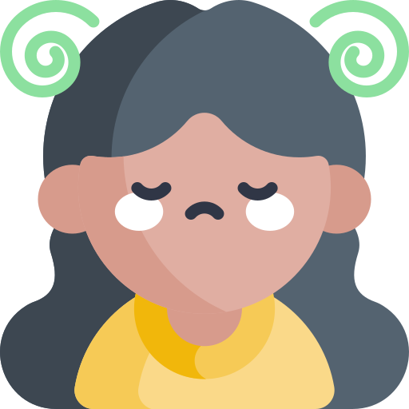
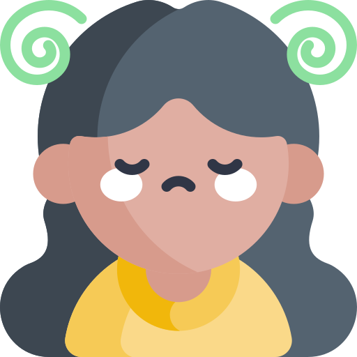

Tipos de ansiedad:
  

- Agorafobia: Es un tipo de trastorno de ansiedad en el que
temes a lugares y situaciones que pueden causarte pánico o
hacerte sentir atrapado, indefenso o avergonzado y a menudo intentas evitarlos.
- Trastorno de ansiedad debido a una enfermedad: Incluye síntomas de ansiedad o pánico
intensos que son directamente causados por un problema de salud físico.
- Trastorno de ansiedad generalizada: Se caracteriza por una ansiedad y una preocupación persistentes y
excesivas por actividades o eventos, incluso asuntos comunes de rutina. La preocupación es desproporcionada con respecto a la situación actual, es difícil de controlar y afecta la forma en que te sientes físicamente.
A menudo sucede junto con otros trastornos de ansiedad o con la depresión.
- Trastorno de pánico: Implica episodios repetidos de sensaciones repentinas de ansiedad y miedo o terror intensos que
alcanzan un nivel máximo en minutos (ataques de pánico). Puedes tener sensaciones de una catástrofe inminente, dificultad para
respirar, dolor en el pecho o latidos rápidos, fuertes o como aleteos (palpitaciones cardíacas). Estos ataques de pánico pueden
provocar que a la persona le preocupe que sucedan de nuevo o que evite situaciones en las que han sucedido.
- Mutismo selectivo: Es una incapacidad constante que tienen los niños para hablar en ciertas situaciones, como en la escuela, incluso cuando pueden hablar en otras situaciones, como en el hogar con miembros cercanos de la familia. Esto puede afectar el desempeño en la
escuela, el trabajo o en la sociedad.
- Trastorno de ansiedad por separación: Es un trastorno de la niñez que se caracteriza por una ansiedad que es excesiva para el nivel de desarrollo
del niño y que se relaciona con la separación de los padres u otras personas que cumplen una función paternal.
- Trastorno de ansiedad social (fobia social): implica altos niveles de ansiedad, miedo o rechazo a situaciones sociales debido a sentimientos de vergüenza,
inseguridad y preocupación por ser juzgado o percibido de manera negativa por otras personas.
- Fobias específicas: Se caracterizan por una notable ansiedad cuando la persona se ve expuesta a un objeto o situación específicos, y un deseo por evitarlos. En algunas personas,
las fobias provocan ataques de pánico.
- Trastorno de ansiedad inducido por sustancias: Se caracteriza por síntomas de ansiedad o pánico intensos que son el resultado directo del uso indebido de drogas, como tomar medicamentos, estar
expuesto a una sustancia tóxica o tener abstinencia a causa de las drogas.
- Trastorno de ansiedad específico y no específico: es un término para la ansiedad y las fobias que no cumplen con los criterios exactos para algún otro trastorno de ansiedad pero que son lo suficientemente
relevantes para ser alarmantes y perturbadores.
Atrás
Siguiente